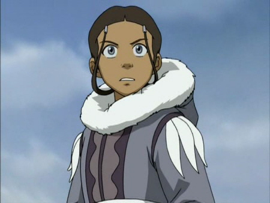
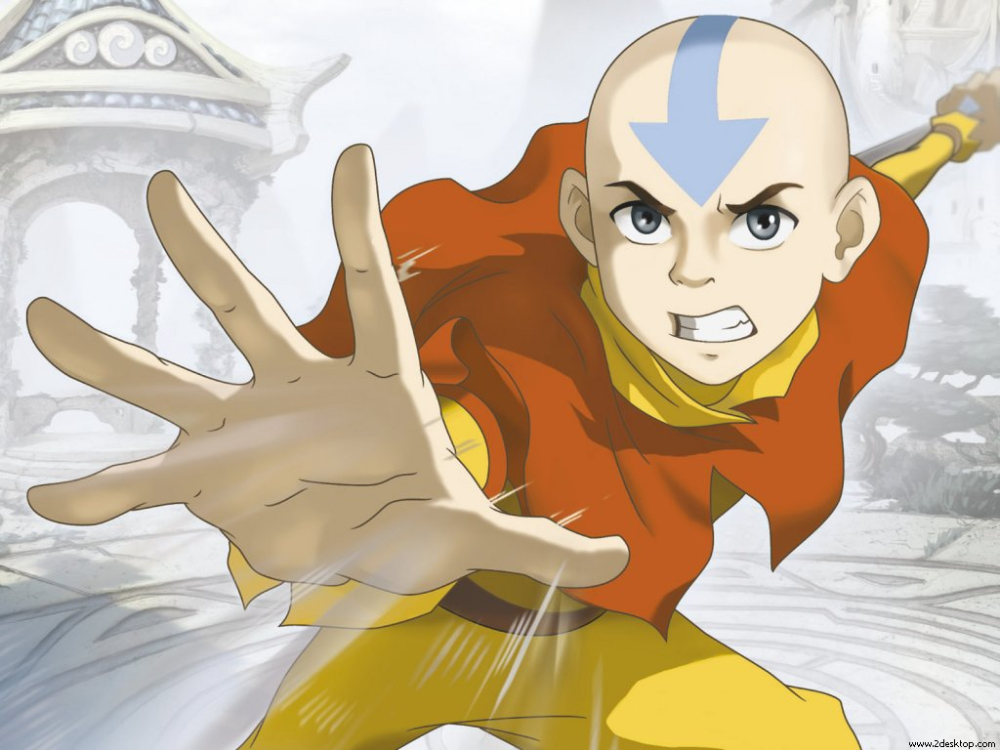
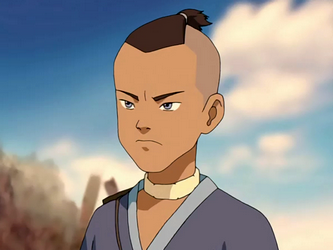

Una joven de 14 años, de pelo largo marrón y ojos azules. Es la última maestra-Agua de la Tribu Agua del Sur quien, junto a su hermano Sokka, encuentran a Aang en un iceberg.
Ella y su hermano Sokka acompañan a Aang en su viaje hacia la derrota de la nación del Fuego y así traer paz al mundo. Ella Puede controlar el agua en sus 3 estados (líquido, sólido y gaseoso).
En algún punto de su aventura ella aprende a usar la técnica llamada la Sangre Control de una anciana proveniente también de la Tribu Agua del Sur, sin haber querido aprender esta técnica Katara se hizo capaz de controlar los líquidos vitales de cualquier ser vivo.
|  |
Aang |
Soka |
Toph |
Zuko |